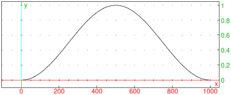

21.5.9 Hann window
The hann_window
command applies the Hann window function
to a sequence or its segment.
-
hann_window takes one mandatory argument
and two optional arguments:
-
v, a real vector with length n.
- Optionally, m, N, a sequence of two integers (by default, m=0 and N=n).
- hann_window
returns the elementwise product of [vm,vm+1,…,vm+N−1]
and the vector w of length N defined by
| wk=sin2 | ⎛
⎜
⎜
⎝ | | ⎞
⎟
⎟
⎠ | ,
k=0,1,…,N−1.
|
Example
| listplot(hann_window([1$1000])) |
